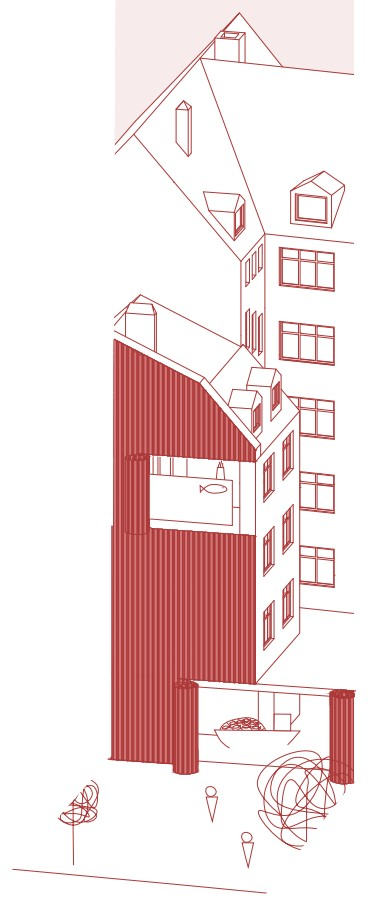
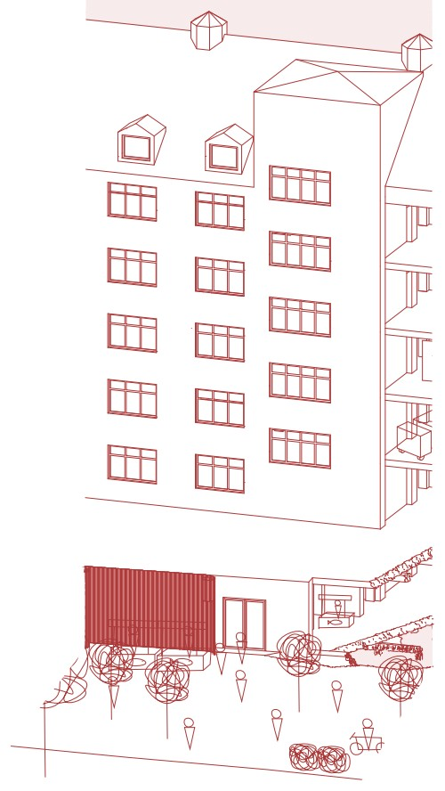
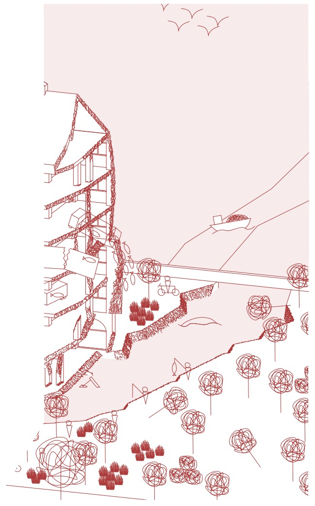
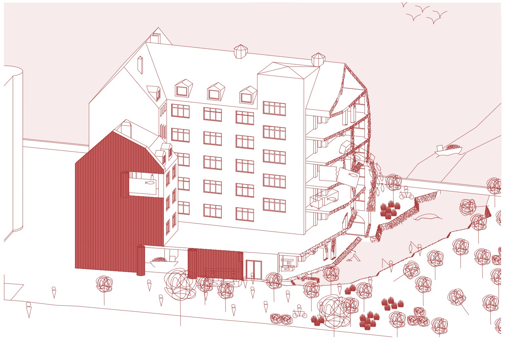

The market of time
An adaptive reuse study developed through four stages of transformation. Axonometric drawings and a section describe changes to the market building, its uses and its relationship to the surrounding public space.





